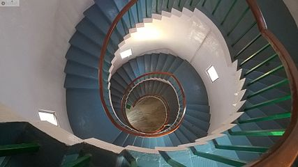
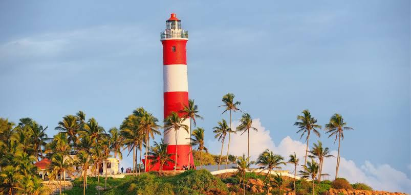
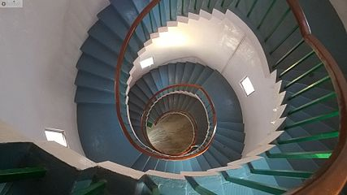
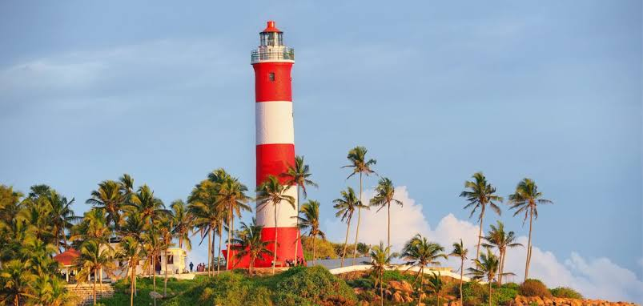

| home | about | heritage | hotels | gallery |
 



The Kannur Lighthouse is located near the Payyambalam Beach, a few kilometers from Kannur town, in Kerala state, south India. It is adjacent to the Sea View Park and the Government Guest House. The lighthouse is still active and overlooks the Arabian Sea. Cannanore is the old English name for the town named Kannur. The lighthouse at Kannur is still often referred to as the Cannanore lighthouse.
Cannanore (now Kannur) was an important seaport under the 15th century rulers of North Malabar, the Kolathiris and the Arakkal Kingdom. The port had maritime links with the ports of Madras, Colombo, Tuticorin, Alleppey, Mangalore, Bombay and Karachi. The Portuguese led by Vasco Da Gama first landed at Kappad beach in 1498. They built the St. Angelo Fort at Kannur in the early 16th century. Almost two centuries later, the region came under the control of the British, who established a cantonment at Cannanore in the 19th century. In 1902, the Presidency Port Officer of Madras state government sanctioned an amount of Rs. 3430/- for the construction of a lighthouse tower atop the fort. This stone tower was commissioned in the year 1903, but at a later date the tower, along with a part of the fort, was taken away by the sea. After this only, a mast was installed inside the fort to hoist a lighthouse lantern.
In order to warn ships at sea of land, a system of hoisting a lantern with an oil wick lamp was introduced in 1843 by the British. A masonry pedestal was constructed in 1903 on the rampart of the fort and a double wick oil lamp inside the 4th order dioptric lens and lantern with arrangement for occultation was placed on this pedestal. The light was made available during fair seasons only, from September to May every year. In 1924, some enhancements were made. The light was shifted in 1939 on to a 16-metre steel trestle erected on the northern bastion of the Fort. The steel trestle can still be seen today at the Fort. The equipment was replaced by a flashing light with 10-second character running on DA gas in 1948. This light remained in operation till the new lighthouse tower was constructed at the present location during 1975–76.